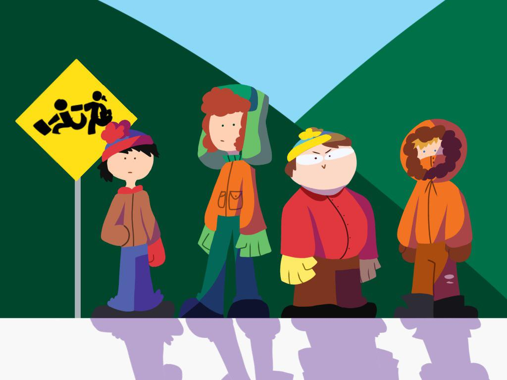

Step by step guide to scraping IMDB for TV Series ratings and votes using R and rvest package
Data-Analysis
Tidyverse
misc
Long-Read
Author
Karat Sidhu
Published
June 20, 2022

Image from Reddit.com by u/booooooop123
Introduction
There are a few tutorials available for scraping IMDB for TV Series ratings and votes using Python but I wanted to write my own tutorial to learn how to scrape IMDB for TV Series ratings and votes using R and rvest package because of the lack of such tutorials in R. Even when such guides are available, they are not very clear and usually deal with scraping data from IMDB data related to top 100/top 1000 lists and not specific seasons of a particular TV Series.
The series I am going to scrape is South Park. This is a TV Series that is popular in the US and is one of the most popular TV Shows in the world. Moreover, this show has over 25 seasons and a lot of episodes, so it helps with the learning of scraping data when dealing with a relatively long dataset compared to a top 100 list.
The basic steps to scrape data are:
Step 1: Find the URL of the page that contains the data you want to scrape
Step 2: Parse the data
Step 3: Repeat the steps above for each page you want to scrape
Step 4: Transform the data
Step 5: Check the data, clean it
Step 6: Save the data
Prerequisites
We need to have a working R installation on your computer. In addition, you will need to have the rvest package installed. You can install it by running the following command in your R console:
install.packages("rvest")
rvest package helps us to scrape data from the web.
RVest Note
RVest is part of the tidyverse. To find out more about it visit rvest documentation.
Additionally, it is recommended you install the CSS Selector Gadget for your web browser. It is a Chrome extension that helps you to select elements on the web page and makes it much simpler to find the elements you want to scrape. It is not a necessary dependency for this tutorial, but it is recommended, alternatively using the “Inspect Element” option in your browser would work as well.
Lubridate package is useful when working with dates. Since we will be extract the airdate of each episode, Lubridate is helpful in converting it to a usable format.
I will be using the following packages for this tutorial:
stringr
readr
magrittr
To make it simpler, install the entire tidyverse set of packages, because they are useful for analysis and visualization of the data scraped.
Scraping
We will be extracting the text elements from the IMDB pages that contain the data we want to scrape. Once extracted, those elements are saved as lists that become the columns of a data frame. Assembling the data frame is the last step of the scraping process.
Find & navigate to the URL
To find the exact url of the page that we want to extract the data from, we first look at the South Park Homepage on IMDB. This page contains the rating and vote count of the South Park TV Series, but it does not contain the ratings and votes of the seasons of the TV Series for each individual episode/season.
On the top of the page, we see the list of episodes of South Park, and clicking that link takes me to the latest season of South Park, which is 25 at the time of writing this post.
For simplicity, we will start with the first season, which is under the link Season 1.
Parse the URL
Using the read_html function, we can parse the HTML code of the page
link <- "https://www.imdb.com/title/tt0121955/episodes?season=1"page <- read_html(link)
This page should now appear in the R console environment. We can see that the page contains a list of HTML elements. It can take a minute to get the page, depending on your internet connection/processor speed.
Extract each element
Using the CSS Selector Gadget, we can find the elements we want to scrape. The following code snippet will find the elements that contain the TV Series name, the TV Series rating, the TV Series votes and the TV Series year and then it will extract the text from each of them.
The codes above will scrape the data for one season. To scrape the data for all seasons, we need to repeat the above steps for each season. To do that, we need to use the for loop. Additionally, we need to change the url variable to point to the correct URL for each season.
Final Code
The final code snippet will look like the following:
Cartman wakes up and realizes he was abducted by aliens after hearing it from his friends. He is in major denial at first though, but even Chef is a believer.
Cartman Gets an Anal Probe
S1, Ep1
7.9
(4,459)
13 Aug. 1997
Cartman's dream about being abducted by aliens turns out to have actually happened, and when the aliens take Kyle's brother, all of them must find a way to bring the aliens back and confront them.
Weight Gain 4000
S1, Ep2
7.6
(3,518)
27 Aug. 1997
Kathie Lee Gifford comes to South Park to present an award to Cartman, and Mr. Garrison hopes to use the event to assassinate her.
Volcano
S1, Ep3
7.7
(3,398)
20 Aug. 1997
The kids go hunting with the rather trigger happy Jimbo and Ned. Little do they know that a volcano is on the verge of erupting.
Big Gay Al's Big Gay Boat Ride
S1, Ep4
7.6
(3,286)
3 Sep. 1997
Stan becomes distracted from the upcoming football game because his dog is gay, so he turns to the gayest man in town for advice, Big Gay Al.
An Elephant Makes Love to a Pig
S1, Ep5
7.5
(3,049)
10 Sep. 1997
Kyle tries to crossbreed an elephant with a pig to win a science contest.
Death
S1, Ep6
8.0
(3,128)
17 Sep. 1997
Grampa wants Stan to kill him, the parents all want to kill the Terrance and Philip show, and Death just wants to kill someone.
Pinkeye
S1, Ep7
8.3
(3,262)
29 Oct. 1997
The living dead beset South Park after a bottle of Worcestershire sauce mixes with embalming fluid at the mortuary; Tina Yothers judged a costume contest.
Starvin' Marvin
S1, Ep8
8.1
(3,141)
19 Nov. 1997
The boys sponsor a starving Ethiopian child, only to have him show up on their doorstep.
Mr. Hankey, the Christmas Poo
S1, Ep9
8.1
(3,152)
17 Dec. 1997
The town is forced to remove anything that either has anything to do with Christmas or is offensive in the least bit to anyone. And Kyle tries to convince everyone of the existence of "Mr. Hankey, the Christmas Poo."
The scraped data is now in the south_park data frame, and can be saved from here. However, to further analyze the data, it needs to be cleaned up.
Data Cleaning
The data frame we created above contains the data we want to analyze. However, the data is not in the most usable format. We need to clean the data to make it more useful.
Total Votes to Integer
Remove the () from the total votes string, and convert it into an integer type.
For static webpages, Rvest package is a great tool to scrape data from a webpage. It is easy to use, and it is very flexible. Further, the data is in a very usable format, and does not need to be cleaned up a great deal. Each function in the package is well documented, and the code is easy to read, like most tidyverse packages.